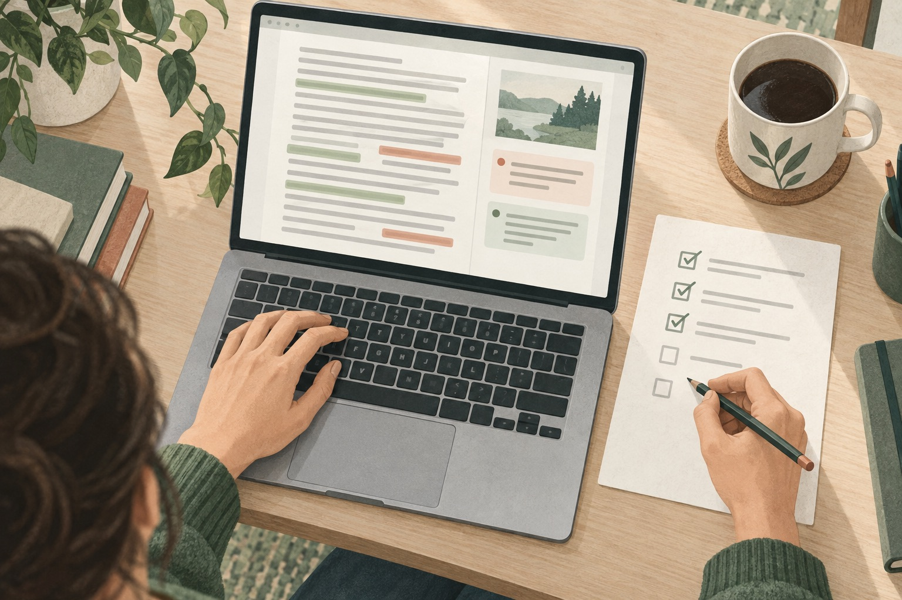

Reading situations
Before you publish, which lines have you actually checked?
The article is almost ready. You open the preview for one last check, then realise you cannot tell which paragraphs you have actually reviewed.

You know what the text is supposed to say. That familiarity makes it easy to move across a sentence without inspecting the words that are there. A message interrupts you, and now the last three paragraphs all look equally finished.
For this pass, give reviewed text and unresolved questions two different visible states. You still make the editorial decisions. The marks simply help you remember which decisions you have made.
Start with the page your reader will see
Open an ordinary HTML preview or the published article in Chrome. This workflow is for reviewing rendered webpage text, not for editing inside a rich-text editor, embedded document, or PDF viewer.
Read the page once for its overall meaning before starting a detailed pass. Does the heading match the argument? Does the ending answer the opening question? Then choose a single purpose for the closer review: wording, factual details, or punctuation. Trying to remember every kind of check at once makes the marks less meaningful.
Make green mean something specific
Start LineCheck, read the current line, and press Enter when you have completed the check you chose. Move down with the arrow key only when you are ready. If something needs attention, use F to flag it red.
The two colours are useful only if you know what they mean for this pass. Green might mean “I checked the names and numbers here,” not “this sentence is perfect.” Red might mean “verify this date” or “read this transition with the previous paragraph.” Keep any detailed explanation in your own notes.
Use a short pre-publish checklist
- Names and numbers: compare dates, names, amounts, and units with their actual sources.
- Small words: read articles, negations, and repeated words instead of supplying the phrase you expect.
- Transitions: leave line focus when needed and read across paragraph boundaries.
- Links and headings: check their meaning in context, then open the links separately to verify their destinations.
LineCheck does not verify facts, test links, or automatically find spelling mistakes. Those checks remain yours. The line guide gives the review a visible pace; the marks make interruptions less ambiguous.
After an edit, check the changed text again
Make corrections in your normal publishing tool, then reload the preview and review the changed section. An old green mark is not evidence that a new sentence has been checked. Text changes can also prevent a saved mark from being restored.
If you start a new review pass with a different purpose, clear the old marks first so the colours retain one meaning. Before publishing, return to unresolved red passages and decide what to change or verify. Press Esc for a final read of the whole page. When you ask yourself what you have checked, you now have specific reference points: the text you reviewed, the passages you changed, and the questions you still need to resolve.